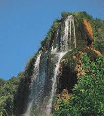
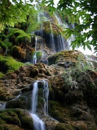

Denizli'ye 70 km uzaklıkta bulunan Güney şelalesi, birinci derece sit alanı olarak tescillenmiştir şelale suyu kireçlidir ve bunun sonucu olarak da şelale yatağında kalker basamaklar ve çeşitli oluşumlar meydana getirmektedir. Gün doğumundan akşama dek izlenmesi gereken Güney Şelalesi gelin duvağı tül perde, yelpaze biçiminde zümrüt yeşili kadife görünümlü yosunlar üzerinde süzülen su damlaları yıllarca süren akışıyla sarkıt dikitleri olan Damlataş Mağarası oluşturmuştur,


<
 "Denizli"ye dönmek için basın
"Denizli"ye dönmek için basın